Windows
Windows 10 and 11
Download installerPortable .exe · Microsoft Store
If SmartScreen stops it, click More info, then Run anyway.
CrossOver draws a crosshair in its own see-through window, on top of whatever you're playing. The game itself is never touched.
Try a few. The app has 530.
CrossOver is a small window with a transparent background that stays on top of everything else. Your mouse and keyboard go straight through it to the game.
Real scope reticles, dots, chevrons, and a few odd ones people asked for over the years. Drag any PNG, SVG or GIF onto CrossOver to use it instead. Size, color, opacity and the center dot are all yours to change.
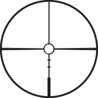
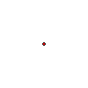
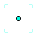
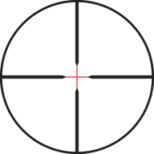
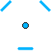
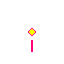
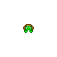
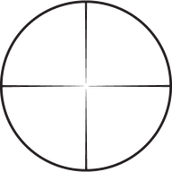
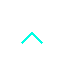
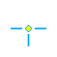
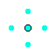
Everything works from the keyboard, so you never have to leave the game to adjust it.
| Lock or unlock | CtrlAltShift X |
| Move one pixel | CtrlAltShift ←→ |
| Hide or show | CtrlAltShift H |
| Center on screen | CtrlAltShift C |
| Next monitor | CtrlAltShift M |
On a Mac, use Control, Option and Shift. You can remap any of these.
CrossOver doesn't touch the game, which is why most games don't care that it's running. But every game sets its own rules, and nobody can promise what an anti-cheat system will decide.
Two cases we know about: Sea of Thieves has flagged players for crosshair overlays, so don't use it there. Escape from Tarkov won't start while CrossOver is open. If you play ranked or for money, read your game's rules first.
Run your game in windowed or borderless mode. Exclusive fullscreen usually draws over it, and a few Vulkan games, like Rainbow Six Siege, don't show it at all. The README keeps a list of games people have tested.
It shouldn't. It's a single small window. A handful of people have seen drops in certain games (issue #70), and turning off hardware acceleration in CrossOver's settings fixed it for them.
The downloads aren't code-signed, so Windows and macOS ask before opening them the first time. On Windows, click More info, then Run anyway. On a Mac, Control-click the app and choose Open.
If you'd rather skip that, install it from the Microsoft Store or the Snap Store. Every build comes from the public code on GitHub.
Yes. There's no account, no ads and no trial. If it's useful to you, you can sponsor its development.
No. People use it to line up a monitor, mark the middle of a screen recording, or give their eyes a fixed point when first-person games make them feel queasy.
The latest version is free, with no account to create.
Windows 10 and 11
Download installerPortable .exe · Microsoft Store
If SmartScreen stops it, click More info, then Run anyway.
Apple silicon and Intel Macs
Download .dmgOne universal app for every Mac.
The first time, Control-click CrossOver in Applications and choose Open.
AppImage, deb, rpm and snap
Download AppImage.deb · Snap Store · All files
Make the AppImage executable before running it. Some lightweight desktops need a compositor.
Looking for older versions or release notes? See every release on GitHub.